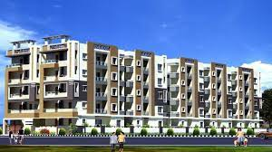
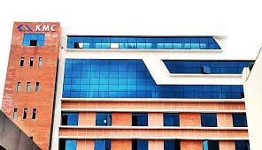
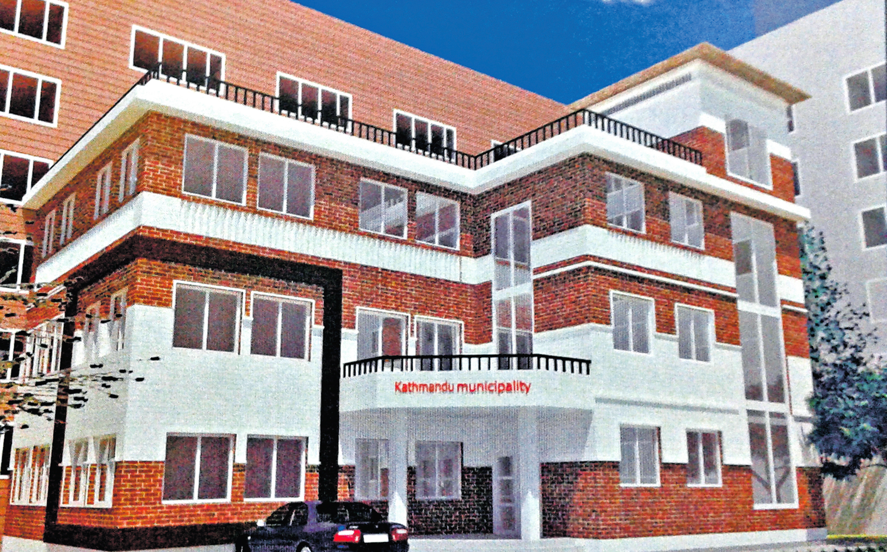
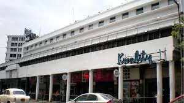
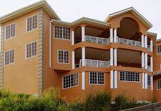

Aurobindo Realty & Infrastructure Pvt Ltd is the fastest-growing Indian Real Estate company. We are known for novelty and top-notch technology that is integrated to render luxurious residential and commercial spaces. Our projects are a true reflection of uncompromised quality driven by world-class design, finest aesthetic appeal, and unparalleled customer-centricity. Our projects are solely developed in a RERA-regulated environment. We are the choicer real estate developers for our clients who expect nothing less than assured quality and delivery of excellence. Our technical innovations synthesize with sustainable approaches that help us deliver idealistic projects. Our exceptional team of designers, architects, engineers, project managers, and planning permission specialists employ their competence to deliver highly standardized operations. We are one of the leading realtors whose residential properties in Hyderabad are high in demand for their magnificent features. We craft living spaces that speak volumes about the state-of-the-art amenities located at prime locations to ensure luxury living experiences. Our commercial projects are making a mark both nationally and internationally, by reaching clients beyond the set boundaries. From building to securing commercial properties, we deliver exclusive solutions to our clients of diverse sectors. We made it hassle-free for our clients to choose commercial properties in Hyderabad that can be used for A-grade office spaces for national and multinational companies, start-ups, or for many other business purposes. We strive to assist you in establishing the most efficient commercial properties to carry forward your varied businesses. Aurobindo Realty is currently the strongest evolving real estate company in Hyderabad that eases to pick a property by ticking off all the items on the real estate checklist. Including the tiniest of details, we take pride in addressing the perfection of art. We just do not build spaces, we build your dreams, aspirations, and choices!
    Kmc
hi@ambitionbox.com
040 2318 9999
© 2023SAI